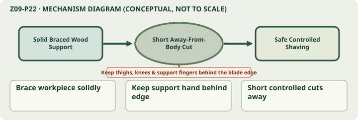

Z09-P22 · Tools and construction · New manuscript
Carve safely using controlled away-from-body push and brace cuts
Shape small deadwood pegs, shavings or notches smoothly while preventing knife slips into hands or legs.
When it applies · Camp woodcraft, fire-shaving prep and field repair shaping with a sharp knife.
Equipment · Sharp fixed-blade or securely locked knife, stable seating/stance and sound deadwood workpiece.

Actions
- Sit or stand stably with elbows braced or workpiece resting against a solid wooden block, directing EVERY blade edge strictly away from fingers, forearms, thighs and companions.[K02, K08]
- Use short controlled thumb-assisted push cuts or chest-lever grips (holding wrists locked and opening shoulders rather than jerking arms) to take thin shavings instead of muscling deep gouges.[K02, ED]
- Keep your supporting hand strictly behind the cutting bevel—never hold a short stick with fingertips ahead of a pushing blade.[K02, K08]
Failure recognition · Sitting with knees together and carving straight downward between the thighs, where a slip hits the femoral artery.[K02, K08]
Verify · Before every cut, trace the exact path the blade will travel if the wood splits suddenly and confirm zero body parts lie in that path.[K02, K08, ED]
Stop or change course · Stop carving immediately if hands grow cold, wet, numb or fatigued; sheath the knife before standing or adjusting grip.[K02, K03, E06]
Evidence and editorial notes
- E06 · CDC · Preventing Hypothermia (current web edition)
- Section: Recognizing and treating hypothermia · Conditions: Cold wet exposure; signs such as confusion, slurred speech, fumbling or drowsiness
Support: Suspected hypothermia warrants prompt help and protection from further cooling. It can occur above freezing if wet or chilled.
Limitations: Early mild shivering can mask rapidly worsening judgment impairment. · Conflicting evidence: None; aligns with ARC and WMS guidance.
Editorial note: Anchors exposure-to-medical escalation thresholds. · Specialist reviewer: Wilderness medicine
Primary source · checked 2026-11-24 - K02 · OSHA · Hand and Power Tools (OSHA 3080) (agency PDF)
- Section: Hand Tools > Knives, Chisels, Impact and Wrenches · Conditions: Manual cutting, striking and prying operations
Support: Direct cutting blades away from the body and bystanders, never use cracked wooden handles or mushroomed striking heads, and do not substitute wrenches or blades as pry bars.
Limitations: Does not specify material tensile ratings for improvised handles. · Conflicting evidence: None; directly informs safe cutting and impact-tool failure cards.
Editorial note: Prevents blade slip, splintered-handle and spalling-metal injuries. · Specialist reviewer: Tool safety and wilderness medicine
Primary source · checked 2026-11-24 - K03 · USDA Forest Service · Handtools for Trail Work (0523-2810-MTDC) (agency handbook)
- Section: Tool Selection, Inspection and Safe Transport · Conditions: Trail and campsite hand tools (axes, saws, shovels, pulaskis, wedges)
Support: Inspect handles for splits, loose heads and secure wedges before every use; sheath sharp edges during carry and maintain a clear work circle around swinging tools.
Limitations: Forestry guidelines apply to maintained commercial tools; improvised stone or salvaged blades carry higher failure risk. · Conflicting evidence: None; aligns with OSHA-3080.
Editorial note: Grounds woodworking, swinging-tool clearance, carrying and maintenance cards. · Specialist reviewer: Forestry tool safety and trail maintenance
Primary source · checked 2026-11-24 - K08 · OSHA · Hand and Power Tools (OSHA 3080) (agency PDF)
- Section: Personal Protective Equipment and Work Area Control · Conditions: Cutting, splitting, striking and rigging operations
Support: Maintain stable footing, eye and hand protection appropriate to flying chips or snapped cordage, and clear bystanders outside the swing or snap-back zone.
Limitations: Field kits often lack shop PPE, requiring slower conservative technique and lower-energy methods. · Conflicting evidence: None; drives snap-back and work-circle exclusion zones in Z09.
Editorial note: Enforces conservative work circles and snap-back clearance. · Specialist reviewer: Tool safety and occupational safety
Primary source · checked 2026-11-24
Source lineage · OSHA 3080 and USFS handtools; new manuscript · Classification · New manuscript.